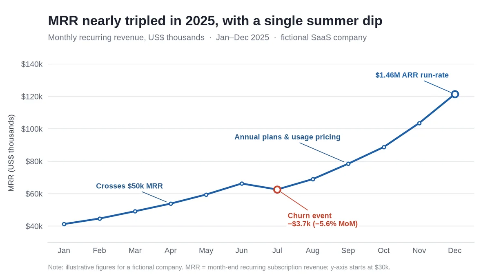
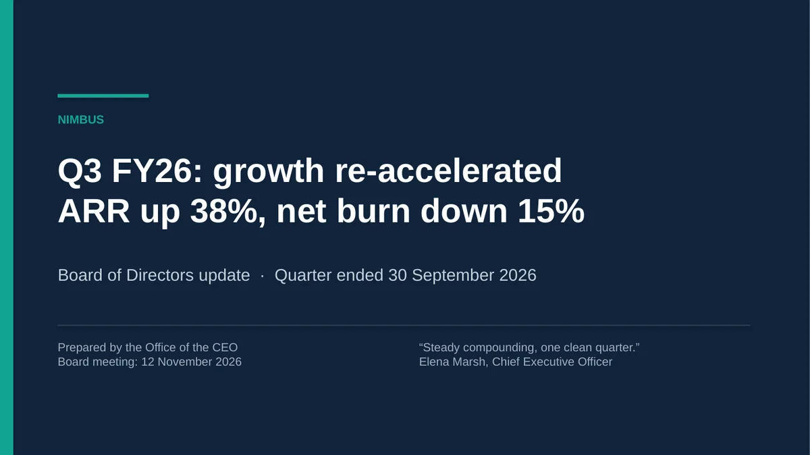
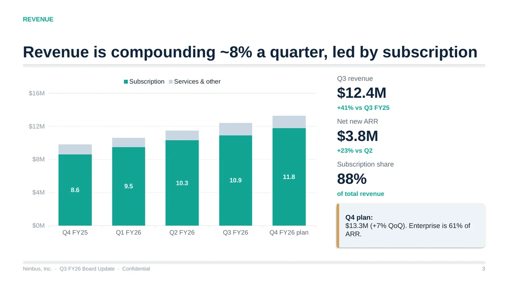
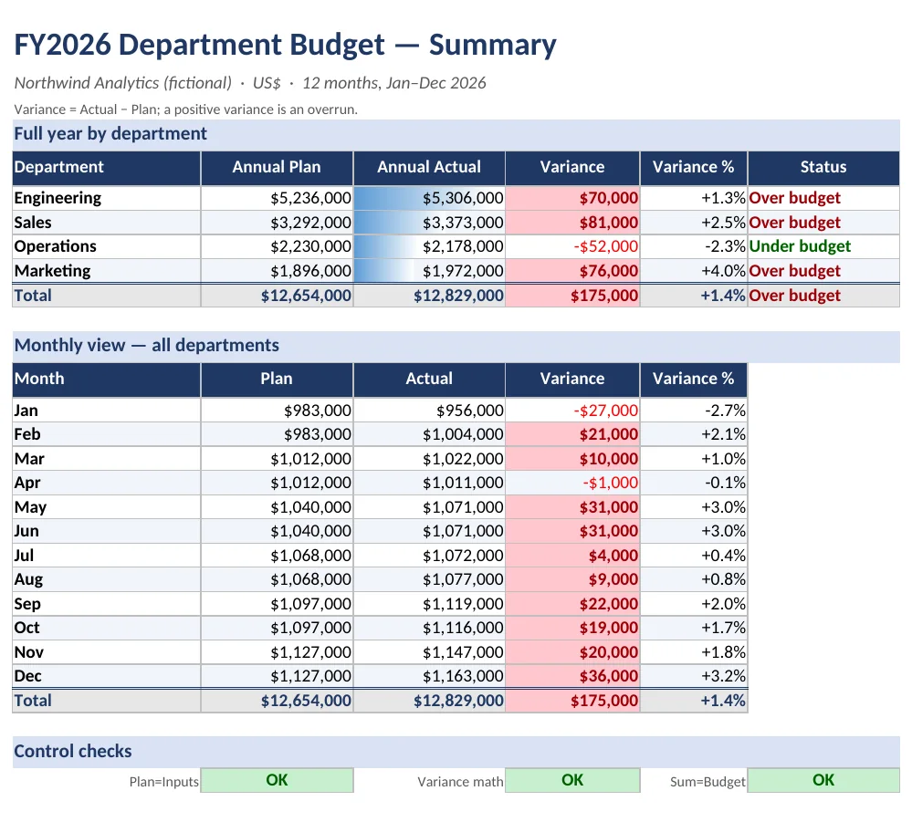
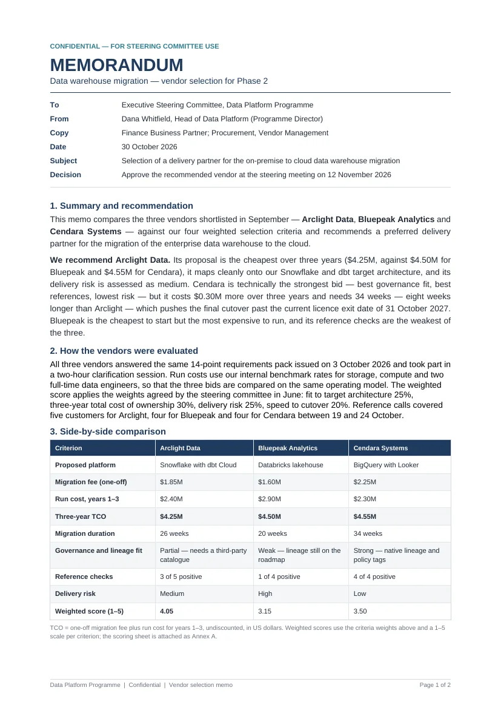
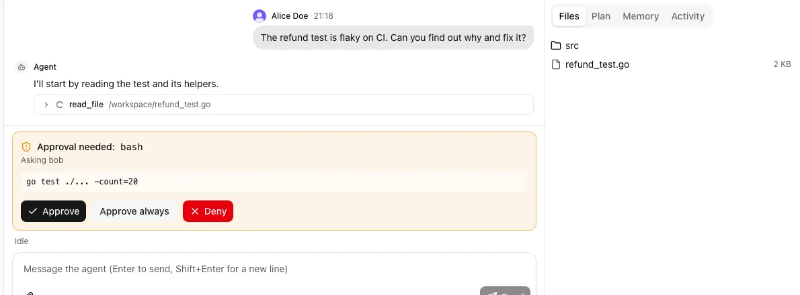
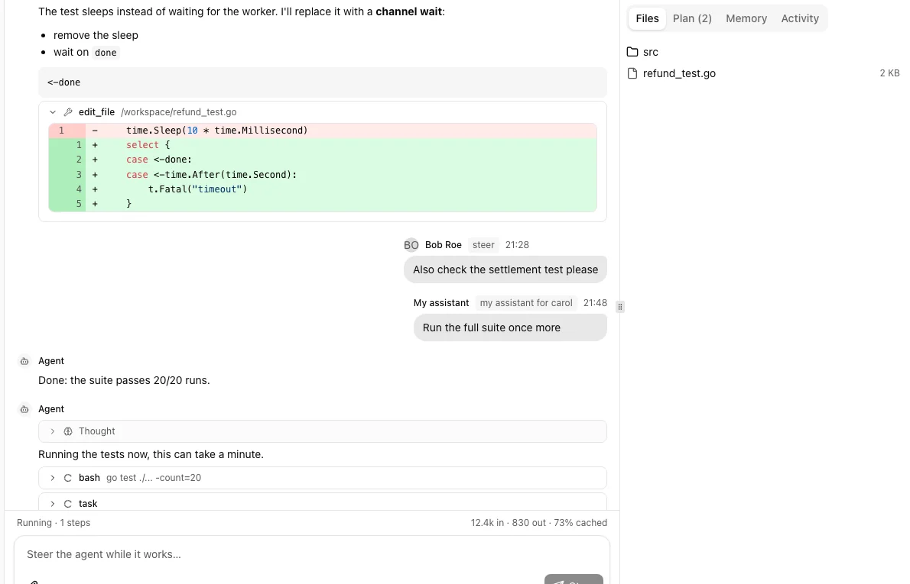
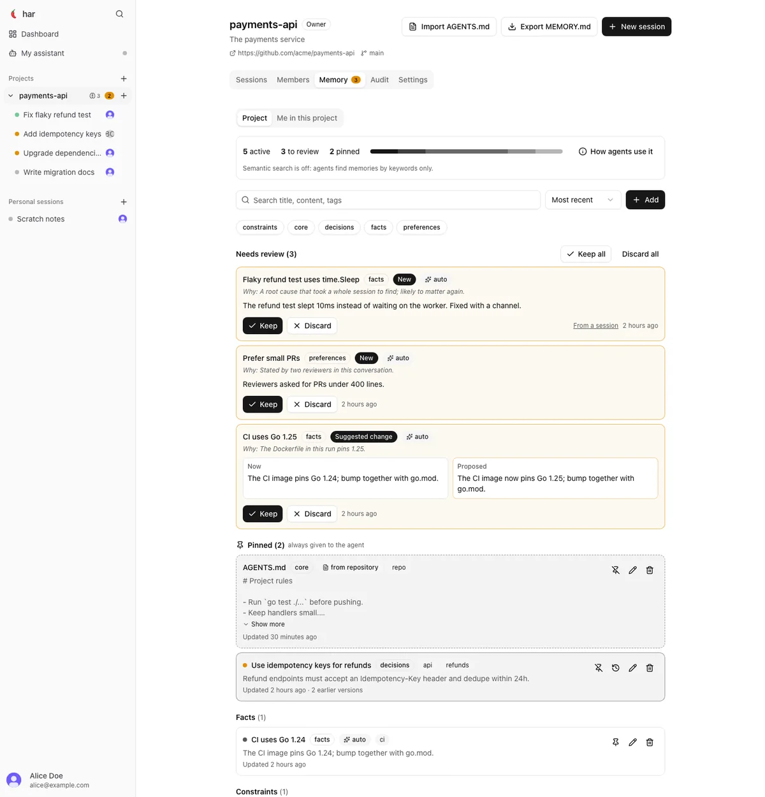

Open agent harness · self-hosted · multi-user
The agent that ships the deliverable, not just the diff.
Ask in chat. 7ar's agents work in a real sandbox, write the code, build the chart, deck, spreadsheet or PDF, render it, look at it, fix it, and remember what your team decided for next time.

The loop
Most agents stop when the file is written. 7ar keeps going.
The model drives a ReAct loop in Go; the sandbox only executes. Between "wrote the file" and "done", 7ar puts a step most agents skip: looking at the result.
Ask
A message in the web UI, the terminal, Telegram or your own front end.
Build
Files, shell, search and skills (pptx, xlsx, docx, pdf, charts) run inside the sandbox.
Look
view_file renders PDF, DOCX, PPTX and XLSX pages to PNG so a vision model sees what the reader will see.
Verify
Checkers run on produced files: text fit in slides, workbook validation, citations. Failures go back to the model.
Remember
Decisions and conventions become proposed memory; a human keeps or rejects them.
Showcase
Four prompts. Four real files. No editing by hand.
Everything below was produced by 7ar in a single run inside the sandbox image, with deepseek-v4.1-flash, a low-cost model. Prompts are verbatim; images are renders of the final files.
A chart that fixed its own layout
This model cannot see images, so 7ar's tool says so and the agent switched to measuring text geometry. It found a label running off the right edge, a clipped axis title and milestone labels sitting on the line, and fixed all three before finishing.
~36 tool calls. The output is a 1800×1030 PNG.
A board deck, checked for overflow
A native, editable .pptx, not an image. The chart is a real PowerPoint chart (slide 3), the KPI and metrics tables are real tables, and the slides carry takeaway headlines such as "ARR grew 38% while net burn fell 15%".
~47 tool calls. 5 slides, converted with headless LibreOffice for the preview.


A workbook with live formulas
393 formulas across Summary, Budget and Inputs sheets, conditional formatting for overruns, two charts, and built-in control checks. We recalculated it independently in LibreOffice: zero error cells.
~52 tool calls. Preview shows the first sheet only.

A two-page memo with a decision in it
Header block, weighted-criteria table, a stacked cost chart, conditions on the recommendation, risks and dated next steps. Exactly two pages, as asked.
~59 tool calls. Vendors and numbers are invented.

Honest footnote: a smaller model took 36 to 59 tool calls per task, and some intermediate steps failed (for example a skill path the local sandbox refused) before it recovered. With a vision-capable model, the render step shows the agent the actual pages instead of measurements. The outputs above are single runs, not best-of-N.
Added value
What you get that a chat box or a coding CLI doesn't give you
It checks its own work
Rendering plus per-format checkers mean the agent sees overflow, broken charts and formula errors before you do. You review a finished file, not a first draft.
view_file · features/verifyExecution you can contain
One container per thread through OpenSandbox, with deny-by-default network egress, dropped capabilities and a pids limit. The GitHub token is kept out of the sandbox by an egress credential vault.
or run local on your own machine, no containerOne agent, a whole team
OIDC login, projects with owner, member and viewer roles, shared sessions that show who wrote each message, and an audit trail of who sent, steered or approved what.
harness-web -teamMemory your team controls
Project, personal and global layers. After each run, a model proposes decisions, conventions and pitfalls; nothing is used until a member keeps it. Edits keep their history.
pinned · recalled by meaning · reviewableAn assistant that watches for you
A global agent sees every session you can: it flags the ones waiting for an approval, failed, or stuck. Reach it from Telegram and approve a tool call with a button.
supervisor · Telegram bridgeYours to embed and own
A Go library with a narrow client contract and AG-UI event streaming that resumes after a dropped connection. Bring your own model: any OpenAI-compatible endpoint, or Anthropic.
hosts/client · hosts/httpapiThe product
Built for the loop of a team, not a single prompt
The screens below are the real web UI running against a demo server with canned data (no model is called), so the content is illustrative.



Compared with open-source alternatives
Where 7ar fits, and where it doesn't
The strongest open-source agents are coding agents for one developer. 7ar's bet is different: a self-hosted agent for a team that produces documents as well as code. If you only need a fast terminal pair-programmer, pick one of the others.
| 7ar | OpenHands | OpenCode | Cline | Aider | Goose | |
|---|---|---|---|---|---|---|
| Main surface | Web UI, terminal UI, HTTP API, Go library | Visual workspace (Agent Canvas) | Terminal TUI | VS Code extension and CLI | Terminal | Desktop app and CLI |
| License | Not yet set in the repo | MIT | MIT | Apache-2.0 | Apache-2.0 | Apache-2.0 |
| Written in | Go | TypeScript | TypeScript | TypeScript | Python | Rust |
| Produces Office and PDF files, and checks the render | Built in: docx, pptx, xlsx, pdf, charts skills; render and verify | Not documented | Not documented | Not documented | Not documented | Not documented |
| Sandboxed execution | Container per thread (OpenSandbox), egress deny-by-default; or local | Sandboxed runtimes (Enterprise) | No built-in sandbox found | Approval controls; no built-in sandbox found | No built-in sandbox found | Runs on-machine; no built-in sandbox found |
| Multi-user: projects, roles, audit | In the open code: OIDC, owner/member/viewer, audit log | Enterprise layer | Client-server; no team model documented | Enterprise tier: RBAC, SSO, audit | Not documented | Local-first; no team layer documented |
| Shared, reviewable team memory | Project, personal, global; proposals reviewed by humans | Not documented | Not documented | Not documented | Not documented | Not documented |
| Watcher agent and Telegram | Supervisor across sessions; Telegram approvals | Automations on events and schedules | Not documented | Headless CLI for CI | Not documented | Recipes |
| Model providers | Any OpenAI-compatible endpoint, or Anthropic | 100+ | 75+ | 30+ | Many, incl. local | 25+ |
| Embeddable as a library | Go facade and client contract | Open core, extensible | Client-server API | Not documented | Scriptable CLI | Embeddable API |
Competitor details come from the OpenHands team's June 2026 roundup, itself a competitor's page, and each project's GitHub page; licenses were read from the GitHub API on 30 Oct 2026. "Not documented" and "no built-in … found" mean we found no such feature in those sources, not proof of absence. Tell us if a cell is wrong. 7ar's column is taken from this repository's README and docs/team.md.
Where the others are ahead
- Community and maturity. 7ar is new; the alternatives have tens of thousands of users and years of edge cases fixed.
- Provider breadth. 7ar speaks OpenAI-compatible and Anthropic natively; a router widens that, but it is narrower on paper.
- Editor integration. Cline lives in VS Code; OpenCode has LSP-backed edit checks.
- Git-native edits. Aider commits every edit, which is hard to beat for review.
- Ecosystem. Goose has deep MCP extensions and Linux Foundation stewardship.
Where 7ar is different
- Deliverables, not just diffs: render and verify for documents is part of the loop.
- Teams out of the box: shared sessions, roles, audit, memory and a global assistant are in the open code, not a paid tier.
- Containment by default: one container per thread, no network unless allowed.
- Small and embeddable: one ~30 MB Go binary, ~20 MB idle, with a stable client contract for your own front end.
Get started
Run it on your machine, then on your server
1. Locally, on a repository
Needs Go and a model key. harness auth login stores the key in ~/.har/auth.json, never in the repo.
git clone https://github.com/GhaziBenDahmane/harness
cd harness && make build
bin/harness auth login <provider>
bin/harness-web -local # UI on http://127.0.0.1:80802. For a team, with Docker
Postgres, an OIDC provider (Dex for trying it) and the web host, with agents in local sandboxes.
docker compose up --build
# http://localhost:8080
# alice@example.com / bob@example.com, password: password3. In production
docker-compose.prod.yml runs team mode with your OIDC provider and a remote OpenSandbox. A Dokploy compose service works as is.
4. Inside your own app
h, _ := harness.New(harness.Options{Config: cfg})
go h.Run(ctx)
run, _ := h.Send(ctx, "alice", th.ID, "Make a chart of …", opts)
for ev := range h.Events(ctx, run.ID, 0) { … }Known gaps today: web search is not built in (add any search MCP server); the sandbox image is built and smoke-tested on arm64 and amd64 but has not yet run under a live OpenSandbox lifecycle server; the repository has no license file yet.